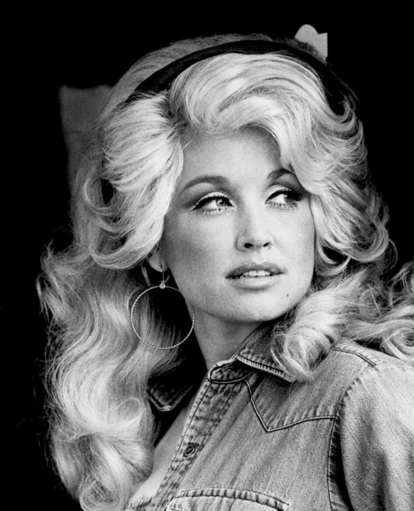
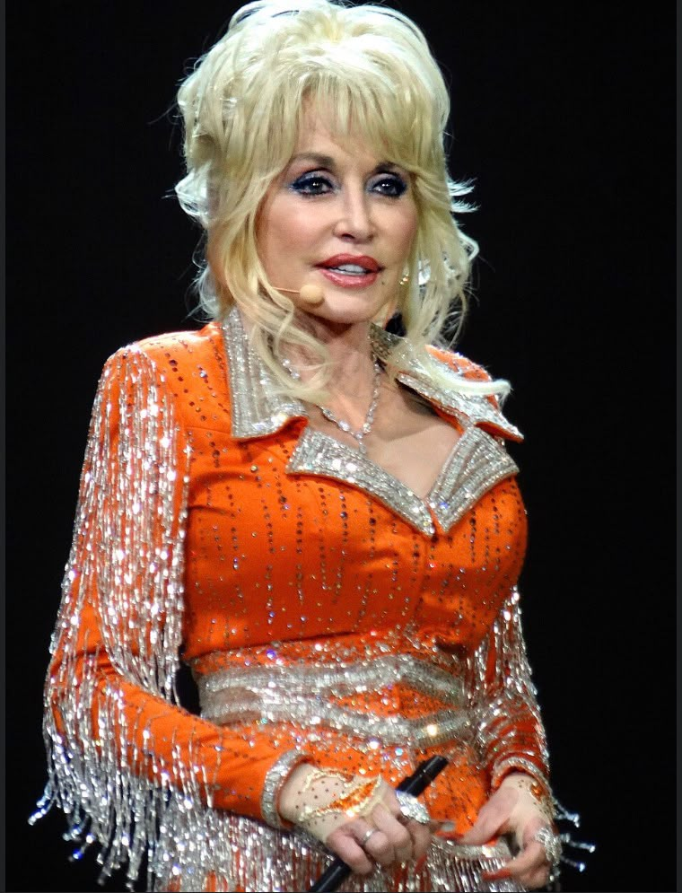

IN LOVING MEMORY
Dolly Parton
January 19, 1946 — August 25, 2026
Celebrating a remarkable life, a timeless voice, and a legacy that touched generations.

A LIFE TO REMEMBER
Remembering Dolly
Dolly Parton leaves behind a remarkable legacy built through music, storytelling, generosity and an enduring connection with people around the world.
From her humble beginnings in Tennessee to becoming one of the world's most celebrated entertainers and philanthropists, her life was one of extraordinary achievement and lasting influence.
Discover her story →HER LEGACY
A Life That Meant So Much
Music
A legendary songwriter and performer whose music became part of generations of people's lives.
Film & Entertainment
Her talents extended beyond music into film, television and entertainment.
Philanthropy
Through initiatives such as the Imagination Library, she made literacy and giving central to her legacy.



“A life remembered is a life that continues to touch others.”